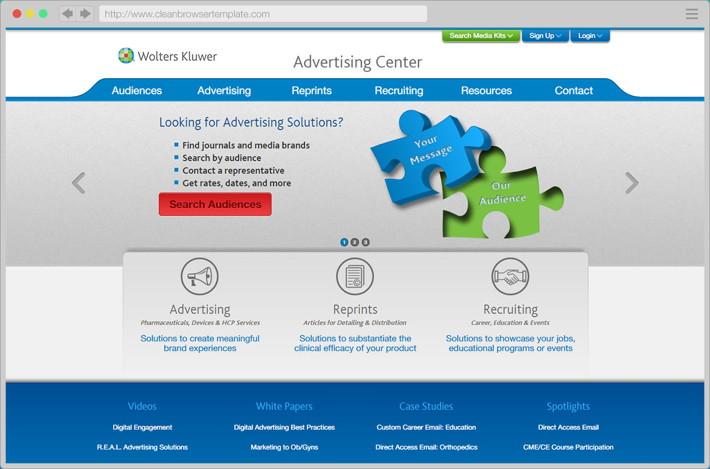

Wolters Kluwer Advertising Center
Branding, Responsive Web Design
Advertising platform for over 300 professional journals...
Advertising platform for over 300 professional journals...
Ad-driven medical publication creating a mobile presence...
Umbraco CMS-based product tutorial website...
A nurse training website converted to a mobile app...
A group of eye care professional magazines...
Medical journal subscription checkout process...
Nurse training and reference assistant...
A screencast-driven educational website for real estate agents...
Mid-fidelity functional prototype for product development...
Mobile access to key building control data...
An informational and educational display of live solar energy data...
Commercial building automation control systems...
Designing emails to be cross-client compatible and targeting a call-to-action...
Presidential campaign for the largest trade organization in North America...